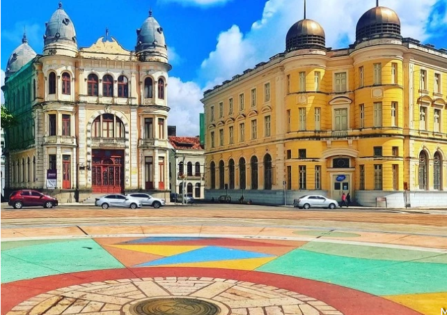

Marco Zero de Recife
Venha conhecer Recife!

O Marco Zero em Recife é um dos destinos históricos mais importantes do nordeste do país. A região reúne atrações históricas e culturais, centro de artesanato e ótimos restaurantes. Além disso, é o principal local do carnaval de Pernambuco, reunindo música, alegria e muita festa. A seguir, saiba mais detalhes sobre o destino.
O espaço surgiu junto à construção da cidade e também é responsável por preservar grande parte da história local. Pela região, é possível apreciar construções da época do Brasil Colonial, assim como estátuas, parques e monumentos históricos.